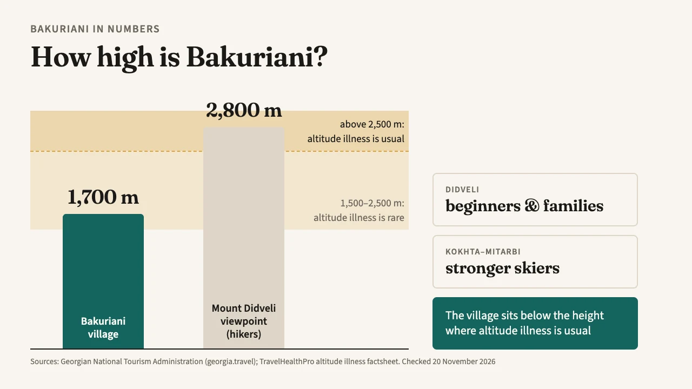
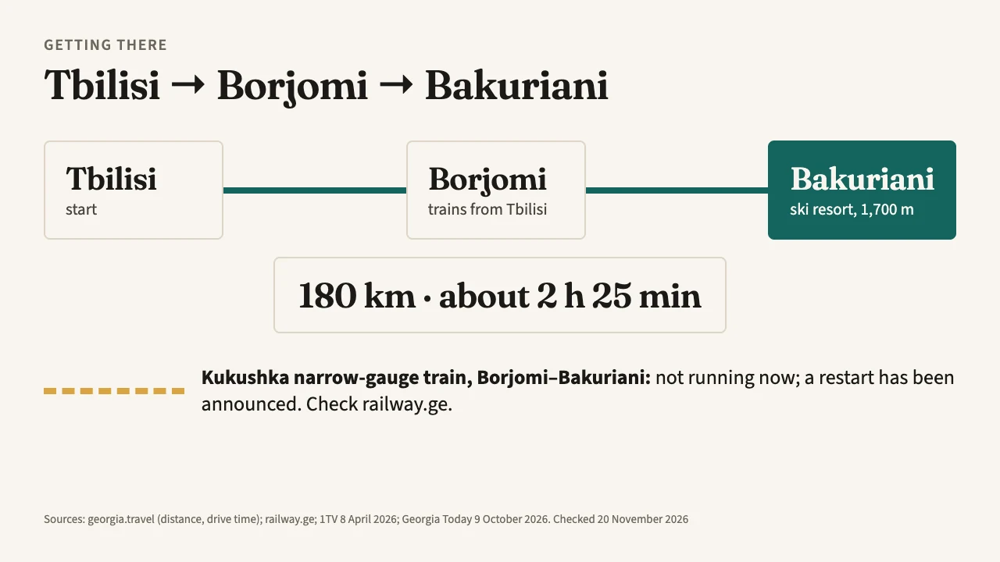
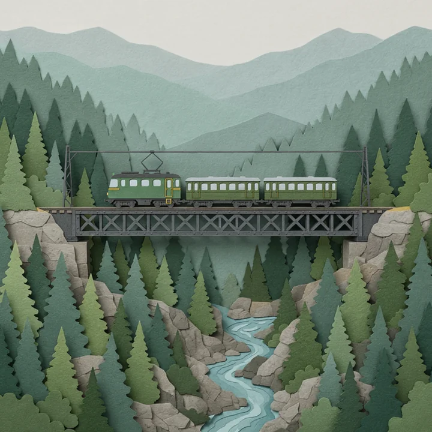
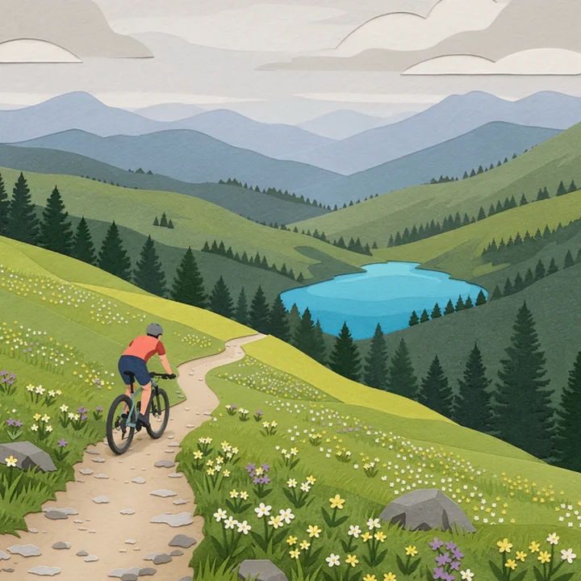
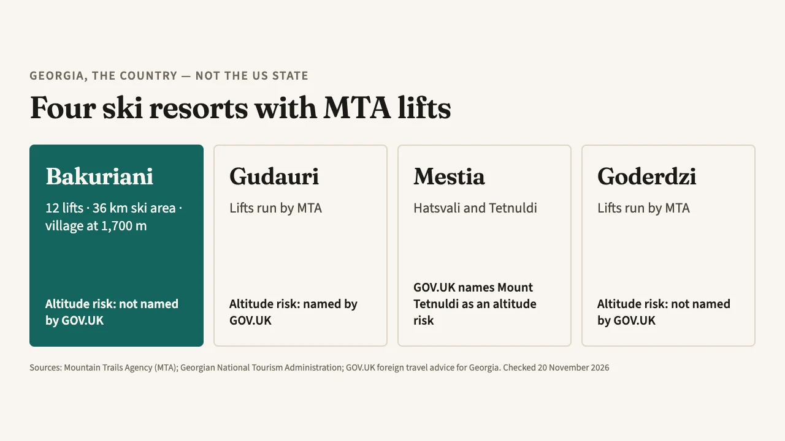
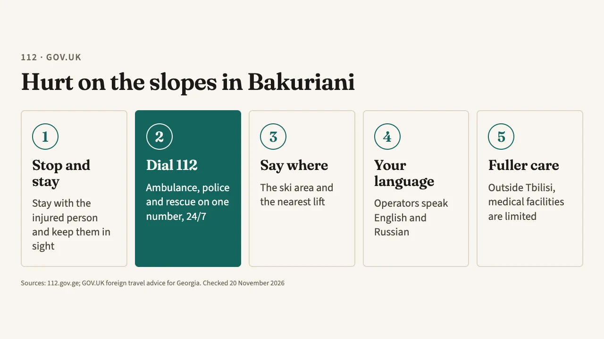
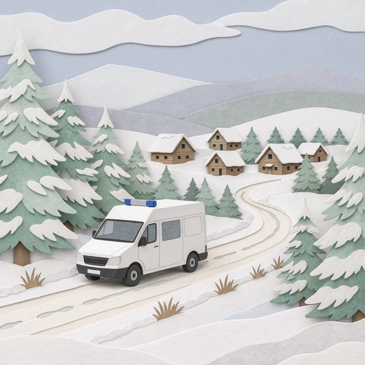

- Elevation
- 1,700 m
- From Tbilisi
- 180 km
- Travel time
- about 2 h 25 min
- Lifts
- 12
- Ski area
- 36 km
This page is about Georgia the country, not the US state, and is part of the Georgia Travel Guide. Checked on 20 November 2026.
Bakuriani ski resort: slopes, lifts and season
The resort has 12 lifts and a 36 km ski area, according to MTA's page for the resort. The skiing is split between three ski areas: Didveli, Kokhta and Mitarbi.
MTA stands for Mountain Trails Agency. It is a state-owned company that manages the ski areas of four Georgian resorts, this one included; the comparison below lists all four. Check lift passes, opening dates and slope status on its site before any trip.
MTA lists the season here as December to March. This winter's opening date is covered in When to go.
Didveli: the main ski area for beginners and families
The tourism administration says "beginners and families flock to the gentler Didveli trails", so this is the place to learn or to ski with children.

Our tip. Spend the first day on the gentlest runs and book a lesson with an instructor before you try anything steeper. Stop while you still feel fresh, and make the last run of the day an easy one. With children, plan short sessions and frequent breaks.
In March 2025, MTA said night skiing was available only on Fridays and Saturdays, from 17:00 to 21:30, on Nodo, the first trail in this area. Check mta.ski for this winter's evening hours before you plan around them.
Kokhta and Mitarbi: for stronger skiers
These two areas are aimed at confident skiers: georgia.travel says professionals "tend to favor" them over the gentler trails.
They are not always open, so check before you plan a trip around them. In March 2025, MTA said low snow had closed both of them for the rest of that season, while the beginners' area kept working.
Ski passes: where to check prices
Check prices on MTA's own site, mta.ski, before you go; we do not quote them here. MTA's FAQ says: "Ski passes are available at operating resort ticket offices. Approved links for online purchases and special offers will be published separately."
Prices quoted on other websites may be out of date or for another season.
Our tip. Read the rental form before you sign it. The UK government's travel advice warns: "Many insurance policies will not cover damage to rental equipment or skiing off-piste without a guide." Ask the rental shop what you would have to pay if the skis or the board get damaged, and keep a photo of the form.
How high is Bakuriani? Altitude and your health
The village stands at 1,700 m above sea level, according to the Georgian National Tourism Administration. That is below 2,500 m, the height above which altitude illness usually occurs.

| Place | Height | Source |
|---|---|---|
| The village | 1,700 m | georgia.travel |
| Mount Didveli viewpoint (for hikers) | 2,800 m | georgia.travel |
| Top altitude of the ski area | 2,702 m | mta.ski |
MTA's resort page gives the top altitude as 2,702 m. The 2,800 m point is a hiking viewpoint, not a lift station. If you climb the mountain, georgia.travel says, "a magical panorama awaits you at 2,800 meters above sea level".
TravelHealthPro's altitude illness factsheet says the condition "usually occurs at altitudes over 2,500m" but "may rarely occur at altitudes between 1,500–2,500m". If you feel unwell after going up, it advises:
- Do not go any higher. Symptoms often settle in 1 to 3 days.
- Rest, and take ordinary painkillers if you need them.
- Go down if you feel worse, or if you are no better after 1 to 2 days.
The UK government's health advice for Georgia names "Gudauri ski resort, Mount Kazbegi, and Mount Tetnuldi" among the places where altitude sickness is a risk; this resort is not in that sentence.
By TravelHealthPro's figures, the risk at the village's height is low. It is not zero: the top of the ski area, at 2,702 m, and the 2,800 m panorama are both above the level where altitude illness usually starts. If you feel a new headache or nausea up there, follow the steps above.
In the GOV.UK list, the risk near Kazbegi is the peak, Mount Kazbegi; our Kazbegi (Stepantsminda) guide covers that area. Symptoms, prevention and when to see a doctor are covered in more detail in Gudauri Altitude, Ski Injuries and Medical Help in Georgia.
How to get from Tbilisi to Bakuriani
The trip is 180 km and takes about 2 hours 25 minutes by car or by minibus, according to the Georgian National Tourism Administration. There is no direct train to the resort at the moment (see the Kukushka below).

We found no official bus or minibus timetables or fares, so we give none. Here are the options:
- Minibus (marshrutka). Ask locally where they leave from and when. Our page Marshrutka in Georgia: Minibus Safety, Trains and Taxis explains what to expect on board.
- Your own or a hired car. The most flexible option. Before a winter drive, read Driving in Georgia.
- Taxi or private driver. Agree the price and the route, including any stops, before you set off.
- Train to Borjomi, then the road. Check the Tbilisi–Borjomi train times on Georgian Railway's site before you plan; we do not give a journey time.
Our tip. In winter, drive in daylight and leave a spare half-day in your plans. Snow can slow the last stretch, and arriving after dark on a mountain road is the part of the trip most worth avoiding.
Borjomi to Bakuriani
The resort lies in Borjomi Municipality. We give no distance for this stretch: two georgia.travel pages give two different figures. If you stop in Borjomi for a night before or after the slopes, our Borjomi guide covers the town itself.
Is the Kukushka train running?
No. On 20 November 2026, Georgian Railway's page for the narrow-gauge line from Borjomi showed no timetable and no tickets.
The line has held cultural heritage status since 2017, according to Georgian Railway. It has not run since 2020. Two official statements since then give different restart dates:

- 8 April 2026. At a government meeting, the prime minister ordered a full restoration of the trains and the track. He said the line would serve passengers again "starting from January of next year", the public broadcaster 1TV reported.
- 9 October 2026. The economy minister said the narrow-gauge line would resume in December and that "The rehabilitation works are nearing completion", Georgia Today reported.
Neither statement came with a timetable or fares. Check railway.ge before you plan a trip around the little train, and have a road option ready in case the restart slips.
When to go: Bakuriani in winter and summer
Come between December and late March for snow, according to the tourism administration.
This winter has a date. MTA announced on 28 October 2026 that the winter season will officially open on 20 December at all four resorts it manages, this one included. Lifts and pistes open in stages as snow allows. Last winter, for example, MTA said Kokhta would open first, on 20 December 2025, with the cable car and the piste running daily from 10:00 to 17:00, 1TV reported. So check which lifts are running before you book your first days.
For the weather on your dates, use a forecast service shortly before you travel. For how the seasons compare across the whole country, see Best time to visit Georgia.
Is there snow in Bakuriani now?
Check the slope and lift status on MTA's site on the day you travel; that is the only reliable answer. We give no forecast and no snow depth here.
Snow varies from year to year. In 2024/25, low snow closed the two areas for stronger skiers early (see the areas for stronger skiers).
Our tip. If you travel in early December or late March, have a plan B for a day without skiing: a walk in the botanical garden, or a day trip down to Borjomi.
Bakuriani in summer

The lifts run in the warm months too. MTA announced that the summer season would begin on 6 July 2026, with the Didveli lifts, Nodo and Deka, running daily from 11:00 to 18:00. It said information about the other areas would be added later, so check MTA's site before you go.
The tourism administration recommends the resort in summer for "extreme sports, paragliding, and world-class cycling tours". If you plan to fly or ride, go with an organised operator and check what your travel cover says about sport (see insurance below).
What to do in Bakuriani off the slopes
Walk in the alpine botanical garden, hike to Tabatskuri Lake in the warm months, or join a cycling tour in summer.
The botanical garden. The alpine botanical garden belongs to the Niko Ketskhoveli Institute of Botany at Ilia State University. Georgia.travel calls it "a great place for hiking". We found no official opening hours or entry rules, so ask on the spot.
Tabatskuri Lake. This mountain lake is about 30 kilometres from the resort one way, over the Tskhratskaro Pass, according to the Georgian National Tourism Administration. The best season for hiking there "starts in May and continues through until the end of November".
Our tip. Treat the lake as a full day out. Take water, warm layers and a charged phone, and tell someone at your guesthouse which way you are going and when you expect to be back.
Tobogganing. MTA's resort page lists a toboggan ride among the activities here and marks the toboggan on its piste map; it does not say in which season it runs. We found no official hours or prices.
Our tip. Ask at the ticket office whether the toboggan is running before you go.
Bakuriani or Gudauri? Ski resorts in Georgia (the country) compared
Georgia, the country in the Caucasus, not the US state, is where MTA, a state-owned company, manages the ski areas of four mountain resorts: this one, Gudauri, Goderdzi and Mestia.

For a family trip or a first time on skis, the official evidence points here. Georgia.travel sends beginners and families to the gentler trails of this resort, and the village sits at 1,700 m. In the UK government's health advice, the other resort in the question is named as an altitude-sickness risk area, and this one is not.
| Resort | Confirmed officially | Altitude risk named by GOV.UK | Our guide |
|---|---|---|---|
| Bakuriani | 12 lifts, 36 km ski area; three ski areas; village at 1,700 m | Not named | This page |
| Gudauri | Ski areas managed by MTA | Yes | Gudauri Altitude, Ski Injuries and Medical Help in Georgia |
| Mestia: Hatsvali, Tetnuldi | Ski areas managed by MTA | Yes, for the mountain of the same name | Svaneti Guide |
| Goderdzi | Ski areas managed by MTA | Not named | — |
For heights and piste lengths at the other resorts, see MTA's site.
Our tip. There is no official ranking, so we do not call any resort the best. Choose by who is in your group. For beginners and children, the gentle trails described above are the easy answer. If you are planning skiing in Georgia higher up, read our altitude page first, and compare the slope status at each resort for your dates on MTA's site.
Hurt on the slopes in Bakuriani: what to do
Call the emergency number and ask for an ambulance. The UK government's travel advice puts it in one line: "Dial 112 and ask for an ambulance."
The number has been Georgia's single emergency line since 2012, according to the service's own site. One call reaches the police, the Fire and Rescue Service and the Emergency Medical Service.
Calling 112 from the slopes
You can speak English. Operators answer in Georgian, English, Azerbaijani, Armenian, Turkish and Russian, 24/7 across the whole country, according to the emergency service.

Our tip. Say where you are as precisely as you can: the ski area and the nearest lift. Save the name of your area in your phone when you arrive. Stay with the injured person while you wait.
What the operator asks and what happens next: see Ambulance in Georgia.
Who helps on the slopes?
We found no official announcement about ski patrols or mountain rescuers at this resort for the 2026/27 season. The official record, by date:
- 2016. The Ministry of Internal Affairs said 74 specially trained officers would patrol the ski resorts, this one included.
- 2021. The ministry's notice on ski patrols named three other resorts and did not name this one.
- 2023. For the freestyle and snowboard World Championships held here, the ministry said: "Ski patrols will protect the safety of vacationers on the ski tracks." Firefighters and rescuers of the Emergency Management Service were also stationed in the town for the event. That was for the championships, not a permanent arrangement.
So do not assume a patrol is close by. The UK government's travel advice warns: "If you get into trouble during hiking, skiing, adventure travel or extreme sports, the emergency response may be limited." More on patrols and rescuers: Who helps on the slopes: ski patrols and mountain rescuers.
Off-piste and avalanches
Leaving the marked pistes is where the official warnings are strongest. The UK government's travel advice is blunt: "Off-piste skiing is very dangerous. It can be difficult to get accurate information on mountain conditions, including avalanche risks." For extreme sports, it suggests considering specialist guides.
Avalanches are monitored by the National Environmental Agency, which issues forecasts and warnings. One example, from 4 February 2024, warned of fog, blizzards, icy roads and a "risk of avalanches" in the mountains. We found no daily avalanche bulletin for this resort, so ask the lift staff about conditions before leaving the pistes.
Is there a hospital in Bakuriani? Where to get medical help
We found no official list of hospitals or first-aid posts in the resort, so we cannot point you to one. The UK government's health advice says: "Outside Tbilisi, medical facilities are limited."

Tell the emergency operator what happened and go where the ambulance takes you. The same advice says your insurance should cover "local treatment or unexpected medical evacuation".
Our tip. If someone's life is at risk, dial 112 first and deal with the insurance later.
Back in the capital, you may need follow-up care: a second look at a sprain, a cast check or advice before you fly home. You can find orthopaedic and trauma doctors in Tbilisi and choose a specialist to see.
Does travel insurance cover skiing?
Not always, so check your policy wording before you ski. The UK government's travel advice says: "Make sure your travel insurance covers your activities." It also warns that many policies will not cover skiing off-piste without a guide. The details are in Does travel insurance pay for ski injuries in Georgia?
Entry is a separate rule. Since 1 January 2026, visitors entering Georgia must have health and accident cover of at least 30,000 GEL, under Resolution No. 602 of the Government of Georgia. What the rule asks of you is explained in Insurance to enter Georgia (2026 rule). Meeting it does not by itself mean your cover pays for a ski injury.
Frequently asked questions
How high is Bakuriani?
How can I get from Tbilisi to Bakuriani?
When does the ski season start in Bakuriani?
Is Bakuriani or Gudauri better for beginners?
Is Bakuriani good for skiing?
How much is skiing in Bakuriani?
Will there be snow in Bakuriani in March?
Sources
- Georgian National Tourism Administration: resort page ↑
- Georgian National Tourism Administration: winter resorts ↑
- Mountain Trails Agency (MTA): about ↑
- MTA: frequently asked questions ↑
- MTA: Kokhta and Mitarbi closed for the season, March 2025 ↑
- MTA: summer season 2026 ↑
- 1TV: Kokhta opens 20 December 2025 ↑
- MTA: the winter season will officially open on 20 December, 28 October 2026 ↑
- Georgian Railway: the narrow-gauge line ↑
- 1TV: government orders full restoration, 8 April 2026 ↑
- Georgia Today: Kukushka to resume in December, 9 October 2026 ↑
- Georgian National Tourism Administration: nine sights in the region ↑
- Ilia State University: Ketskhoveli Institute of Botany ↑
- Georgian National Tourism Administration: Tabatskuri Lake ↑
- 112 Georgia: about the service ↑
- 112 Georgia: languages ↑
- GOV.UK travel advice: health ↑
- GOV.UK travel advice: safety and security ↑
- GOV.UK travel advice: getting help ↑
- TravelHealthPro: altitude illness factsheet ↑
- Ministry of Internal Affairs: ski patrols, 2016 ↑
- Ministry of Internal Affairs: ski patrols, 2021 ↑
- Ministry of Internal Affairs: World Championships, 2023 ↑
- National Environmental Agency: functions ↑
- National Environmental Agency: warning, 4 February 2024 ↑
- Legislative Herald of Georgia: Resolution No. 602 (Georgian) ↑
- GOV.UK travel advice: entry requirements ↑
- MTA: resort page ↑
This guide is general information, not medical advice: the doctor decides on your treatment.